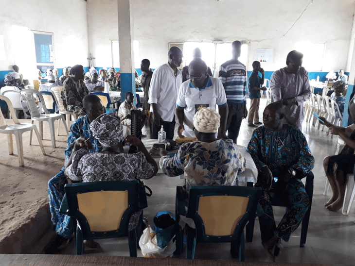

Introduction to Makoko
I believe that Makoko is a slum of hope. This is because they have managed to
build their own utilities such as schools, makeshift hospitals, shops, etc.
Not only that, they have built their own roads with the use of the water in which
their slum is elevated from.
The fact that they live in these abysmal and inhumane conditions but still
desperately hope for better days creates a sense of unity throughout their
respective communities. Not only that; Makoko has appointed its head chief,
Raymond Adekule Olaiya.

Back